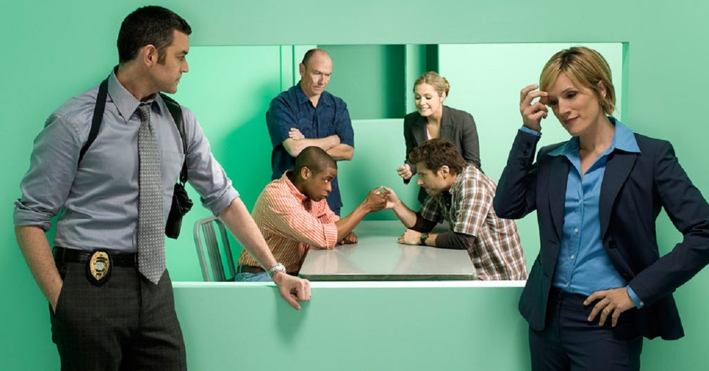

Psych is an American detective comedy-drama television series. The series stars James Roday as Shawn Spencer, a young crime consultant for the Santa Barbara Police Department whose "heightened observational skills" and impressive eidetic memory allow him to convince people that he solves cases with his psychic abilities. The program also stars Dulé Hill as Shawn's intelligent best friend and reluctant partner Burton "Gus" Guster, as well as Corbin Bernsen as Shawn's father Henry, a former detective with the Santa Barbara Police Department.
Psych premiered on July 7, 2006. Psych was the highest-rated American basic cable television premiere of 2006. On February 5, 2014, USA Network confirmed that the eighth season of Psych would be its last, with the series finale airing on March 26, 2014.
Most episodes begin with a cold open in the form of a flashback to Shawn and Gus's childhoods. The flashbacks usually involve Shawn and Gus being taught a lesson by a young Henry Spencer (Shawn's father) (Corbin Bernsen), who wishes that his son would follow in his footsteps and become a law enforcement officer. These lessons often play a role for the climax of the episode. As a child, Shawn was taught by Henry to hone his powers of observation and deduction, often using games and challenges to test him. Each flashback also sets the theme for the episode.
Shawn originally becomes known as a psychic when, after calling in tips on dozens of crimes covered on the news which help the police to close the case, the police become suspicious of his knowledge, theorizing that such knowledge could only come from the "inside" and unwilling to believe that it is merely Shawn having honed his observational skills. To avoid being sent to jail, Shawn uses those skills to convince the police that he is psychic; though the interim police chief warns Shawn that if his "powers" are fake, he will be prosecuted. With no choice but to keep up the act, and having proven himself an effective aid to the police in solving crimes, he establishes a psychic detective agency, Psych, and becomes an outside consultant to the police. He enjoys teasing lifelong friend Burton Guster (Gus), a pharmaceutical sales representative, about Gus's eclectic interests as they drive around in a blue Toyota Echo nicknamed "The Blueberry" solving crimes.
Head detective Carlton Lassiter (Timothy Omundson), playfully nicknamed "Lassie" by Shawn and Gus, quietly comes to respect Shawn's crime-solving skills despite doubting his psychic abilities; Lassiter is constantly exasperated by Shawn keeping investigations ongoing and/or infuriated by Shawn's antics. However, junior detective Juliet "Jules" O'Hara (Maggie Lawson) and Chief Karen Vick (Kirsten Nelson) are far less antagonistic – with O'Hara expressing belief in Shawn's abilities while Vick is mum on the subject – and usually willing to give Shawn the leeway he needs to solve cases. Henry and Shawn have a difficult relationship, but despite this, Henry reluctantly helps Shawn on various occasions.
Main
The theme song for Psych is "I Know You Know" by The Friendly Indians, series creator Steve Franks's band. Some episodes in the third through eighth seasons use an extended version of "I Know You Know" consisting of the first verse and the chorus,[19] though most episodes use a shortened version consisting of mostly the chorus. In some episodes, the theme song is changed, usually as a tie-in to the theme of the episode to come.
Variations of the theme song include:
In the "pilot", Roday improvised by picking up a pineapple and saying, "Should I slice this up for the road?" Since then, pineapples have appeared in every episode as a running gag, whether just one in the background or the actual mention of it. It is Shawn's go-to housewarming gift. The pineapple is a major marketing point for items related to the show on the USA website.[20] Fan movements, such as fan-made websites, have also been dedicated to finding a pineapple or pineapple-related object in each episode.[21]
For information on Elizabeth Taylor